Deskriptive Statistik
DescStats
Zusammenfassung
Origin bietet umfassende Optionen zur Deskriptiven Statistik, einschließlich Grundlagen der Statistik (Mittelwert, Median, Varianz etc.), Häufigkeitszählungen und Korrelationskoeffizienten Ihrer Datensätze. Zusätzlich zu den leistungsstarken Zeichenfunktionen helfen Origins statistische Hilfsmittel Ihnen beim Zusammenfassen und Analysieren Ihrer Daten.
Was Sie lernen werden
Dieses Tutorial zeigt Ihnen, wie Sie:
- den Dialog Spaltenstatistik verwenden, um Berechnungen der deskriptiven Statistik für gruppierte Daten durchzuführen,
- die statistischen Ergebnisse in ein neues Arbeitsblatt für die weitere Verarbeitung kopieren,
- Arbeitsblattdaten nach Attributwerten in einer zugewiesenen Spalte sortieren,
- die Datensätze mit dem Hilfsmittel Korrelationskoeffizient analysieren.
Origin-Version mind. erforderlich: Origin 2015 SR0
Häufigkeitsdaten für Gruppen suchen
Sie können das Hilfsmittel Diskrete Häufigkeit verwenden, um schnell Informationen zur Häufigkeit von Datengruppen zu erhalten.
- Öffnen Sie eine neue Arbeitsmappe. Wählen Sie Daten: Aus Datei importieren: Einzelnes ASCII und importieren Sie die Datendatei \Samples\Statistics\automobile.dat.
- Markieren Sie die ersten beiden Spalten im Arbeitsblatt automobile. Wählen Sie im Menü Statistik: Deskriptive Statistik: Diskrete Häufigkeit.
- Setzen Sie den Modus von Neu berechnen auf Auto. Damit Operationen im Abschnitt Controlling the Categorical Values des Arbeitsblatts der Quelldaten wirksam werden, wählen Sie für Daten sortieren nach die Option Kategoriale Ordnung. Klicken Sie dann auf OK.
- 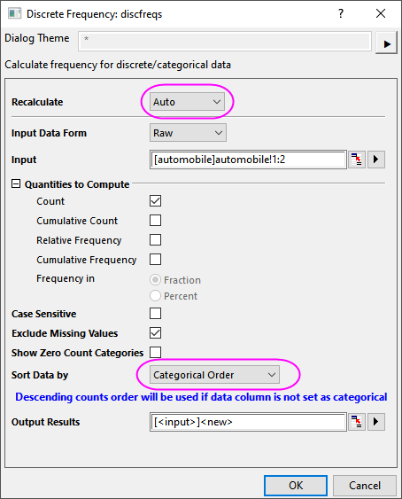
- Das sich ergebende Arbeitsblatt DiscretFreq1 zeigt die Daten und deren Häufigkeit für automobile Year bzw. Make an.
 |
Trotz der Tatsache, dass sich in den Spalten Schlösser befinden, kann das Arbeitsblatt durch Markieren der gewünschten Spalte neu angeordnet werden. Wählen Sie dann im Menü Worksheet: Worksheet sortieren und eine der Optionen Aufsteigend, Absteigend oder Benutzerdefiniert.
|
Deskriptive Statistik der gruppierten Daten berechnen
Mit dem Hilfsmittel Spaltenstatistik können grundlegende statistische Analysen für die Daten in einzelnen Spalten durchgeführt werden.
- Kehren Sie zum Arbeitsblatt automobile zurück. Wählen Sie im Menü Statistik: Deskriptive Statistik: Spaltenstatistik: Dialog öffnen....
- Erweitern Sie im Dialog Spaltenstatistik auf der Registerkarte Eingabe den Zweig Bereich 1 und klicken Sie auf die interaktive Schaltfläche
 rechts vom Datenbereich. Wechseln Sie zurück zum Arbeitsblatt, markieren Sie Spalte C und ziehen Sie Ihre Maus bis Spalte G. Klicken Sie erneut auf die interaktive Schaltfläche, um den Dialog wiederherzustellen. Klicken Sie im Dialog nach Festlegen der Eingabedaten unter Bereich 1 auf die Pfeilschaltfläche oben rechts im Bedienfeld Gruppe und wählen Sie B(Y): Make als Gruppierungsdaten. Setzen Sie den Modus von Neu berechnen auf Auto.
rechts vom Datenbereich. Wechseln Sie zurück zum Arbeitsblatt, markieren Sie Spalte C und ziehen Sie Ihre Maus bis Spalte G. Klicken Sie erneut auf die interaktive Schaltfläche, um den Dialog wiederherzustellen. Klicken Sie im Dialog nach Festlegen der Eingabedaten unter Bereich 1 auf die Pfeilschaltfläche oben rechts im Bedienfeld Gruppe und wählen Sie B(Y): Make als Gruppierungsdaten. Setzen Sie den Modus von Neu berechnen auf Auto.
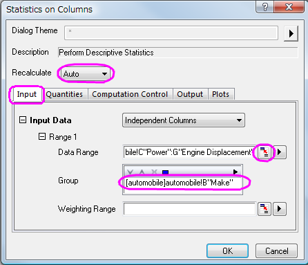
- Aktivieren Sie auf der Registerkarte Ausgabe in der Gruppe Diagramm das Kontrollkästchen Diagramme des gleichen Typs in einem Graph anordnen. Aktivieren Sie auf der Registerkarte Zeichnungen das Kontrollkästchen Boxdiagramme.
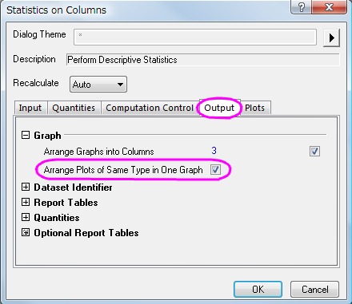 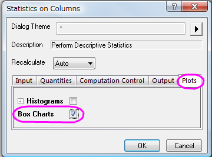
- Klicken Sie auf OK, um die Ergebnisse in einem Berichtsblatt zu erhalten.
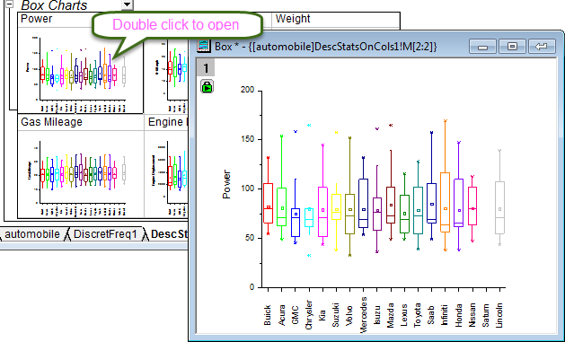
|
Um ein eingebettetes Boxdiagramm im Berichtsblatt zu modifizieren, klicken Sie doppelt auf das Diagramm. Das Diagramm wird geöffnet, so dass Sie es benutzerdefiniert anpassen können. Klicken Sie auf die Schaltfläche Zurück in der oberen rechten Ecke, um das modifizierte Diagramm im Berichtsblatt wiederherzustellen.
|
Statistische Ergebnisse für weitere Operationen verwenden
Es ist möglich, weitere Datenanalysen durchzuführen und die statistischen Ergebnisse zu zeichnen.
Um beispielsweise die durchschnittlichen Attributwerte (d.h. Horsepower, 0-60 mph Time, Weight, Mileage) nach Automarken zwischen 1992 und 2004 zu erhalten, führen Sie folgende Schritte durch:
- Kehren Sie zurück zur Arbeitsmappe automobile - automobile.dat und öffnen Sie das Arbeitsblatt DescStatsQuantities1. Markieren Sie die Spalten D(Y2) und E(yEr±) und wählen Sie im Menü Arbeitsblatt: Spalten entstapeln: Dialog öffnen...
- Setzen Sie im Dialog wunstackcol den Modus für Neu berechnen auf Auto, wählen Sie Gruppenspalten. Klicken Sie auf die Schaltfläche
 und wählen Sie A(X1) Data.
und wählen Sie A(X1) Data.
- Erweitern Sie den Zweig Optionen und aktivieren Sie das Kontrollkästchen Andere Spalten einbinden. Klicken Sie unter Andere Spalten auf die Schaltfläche des Kontextmenüs und wählen Sie B:(X2) Make. Setzen Sie Längste übereinstimmende Gruppe als Extrahierungsregel für Andere Spaltenwerte, erweitern Sie Ausgabeeinstellungen und wählen Sie in Gruppierungsinfo ablegen in die Option Langname. Klicken Sie auf OK.
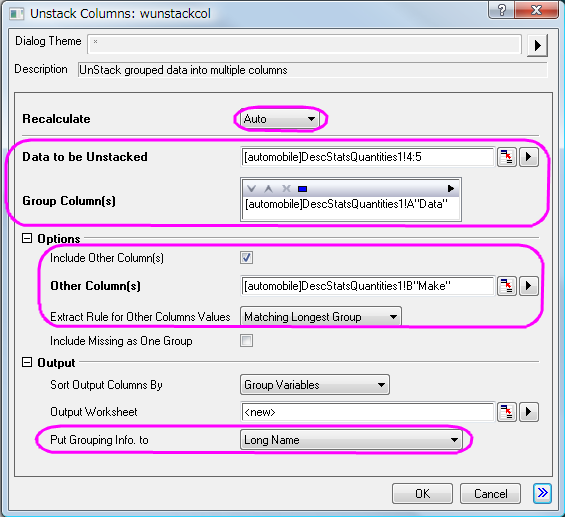
- Um die Ergebnisse zu sehen, öffnen Sie das Arbeitsblatt UnstackCols1, markieren Sie das Arbeitsblatt und wählen Sie im Menü Zeichnen > Mehrere Felder/Achsen: Gestapelt.
- Setzen Sie im Dialog Plotting:plotstack den Diagrammtyp auf Punkt. Klicken Sie auf OK.
- Nun sollen die Hilfsstrichsbeschriftungen der oberen X-Achse gedreht werden, damit sie besser zu lesen sind. Klicken Sie doppelt auf die Hilfsstrichsbeschriftungen der oberen X-Achse, um den Dialog Achsen zu öffnen, und legen Sie die folgenden Einstellungen bei ausgewähltem Symbol Oben fest. Klicken Sie auf OK.
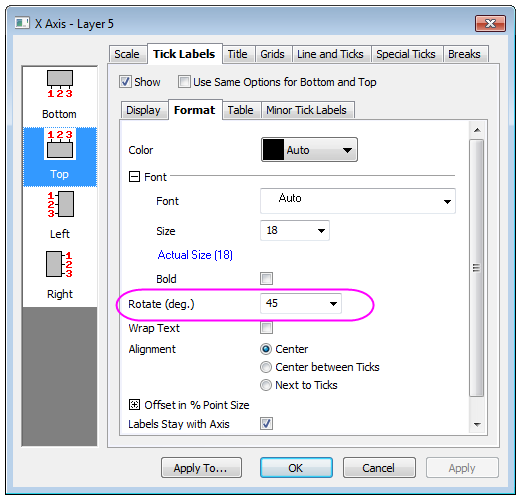
Drehen Sie die Beschriftungen der Hilfsstriche für Unten auf die gleiche Weise.
- Das Berichtsblatt und das Diagramm sollten nun folgendermaßen aussehen:
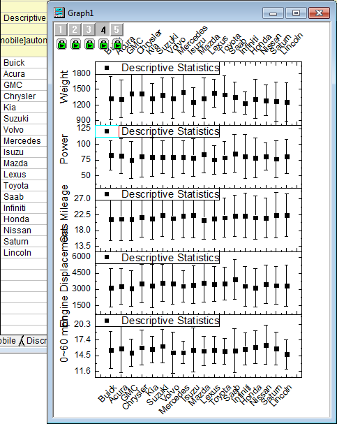
Verhältnis zwischen verschiedenen Indikatoren analysieren
Verwenden Sie den Korrelationskoeffizienten, um das Verhältnis zwischen den Spalten der Automobildaten zu untersuchen. Als nächstes erstellen Sie Punktdiagramme mit Konfidenzellipsen, um die Korrelationen grafisch darzustellen.
- Öffnen Sie das Arbeitsblatt automobile der Arbeitsmappe automobile - automobile.dat und markieren Sie die letzten fünf Spalten.
- Wählen Sie im Menü Statistik: Deskriptive Statistik: Korrelationskoeffizient: Dialog öffnen. Erweitern Sie im Dialog corrcoef den Zweig Korrelationstypen und aktivieren Sie das Kontrollkästchen Pearson.
- Erweitern Sie den Zweig Diagramme und aktivieren Sie das Kontrollkästchen Konfidenzellipse hinzufügen. Das Kontrollkästchen Punktdiagramme sollte automatisch aktiviert sein. Klicken Sie auf OK.
- Die Arbeitsblätter ScatterMatrix1 und CorrCeof1 sollten wie unten aussehen. Sie zeigen die hohe, positive Korrelation zwischen Engine Displacement und Power und die hohe negative Korrelation zwischen Gas Mileage und Engine Displacement.
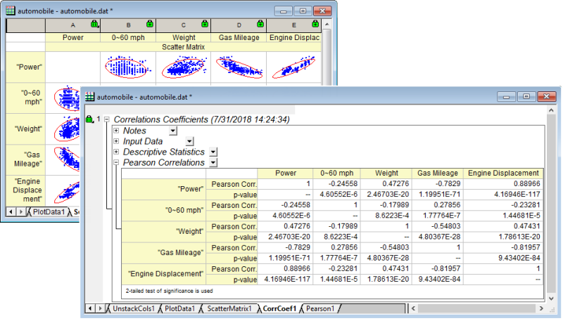
Kategoriale Werte steuern
- Mit den folgenden Schritten wird die Reihenfolge der Werte, wie sie im Diagramm abgebildet wird, benutzerdefiniert angepasst. Es wird dabei keine Änderung an den Quelldaten vorgenommen. Klicken Sie mit der rechten Maustaste auf Spalte B in der Arbeitsmappe, wählen Sie Als Kategorisch setzen im Kontextmenü und klicken Sie doppelt auf die Kategorien-Zelle der Spalte "Unsortiert", um den Dialog Kategorien zu öffnen.
- 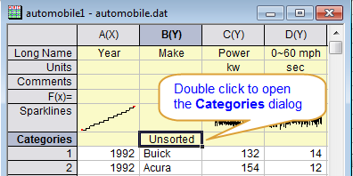
- Deaktivieren Sie das Kontrollkästchen Kategorien benutzerdefiniert anpassen und verwenden Sie , um die Position von jedem Element dem Bild unten entsprechend festzulegen. Auf diese Weise können Sie die Elemente nach Herkunftsland des Herstellers sortieren, das heißt USA -> Japan/Korea -> Europa. Klicken Sie auf OK, um den Dialog zu schließen.
- 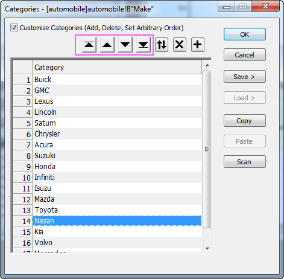
- Sie können zu dem im obigen Abschnitt erstellten Berichtsblatt gehen. Da der Modus Auto für die Neuberechnung verwendet wird, werden das Berichtsblatt für Diskrete Häufigkeiten und Spaltenstatistik, einschließlich der Boxdiagramme, automatisch mit der festgelegten Ordnung der kategorialen Daten aktualisiert.
- 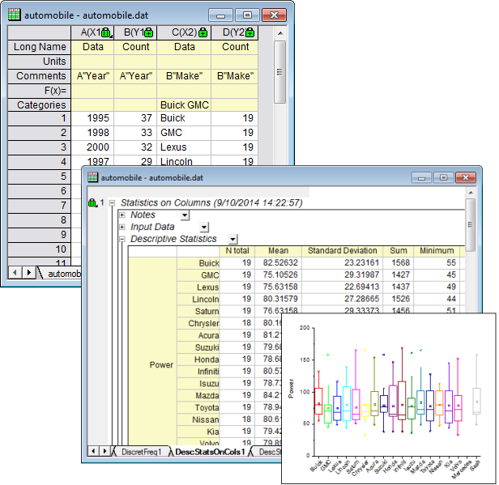
- Die Ergebnisse der Entstapelten Spalten und das gestapelte Diagramm werden ebenfalls automatisch aktualisiert.
- 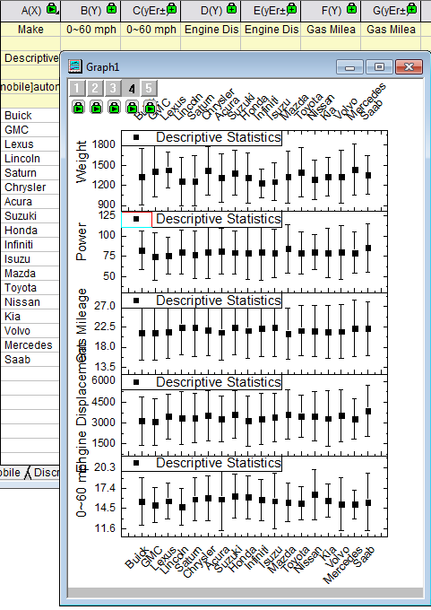
Hinweis: Wenn die Operation nicht automatisch aktualisiert wurde, können Sie dies auch manuell tun, indem Sie auf die Schaltfläche Neu berechnen  in der Symbolleiste Standard klicken. Die Schaltfläche wird grün in der Symbolleiste Standard klicken. Die Schaltfläche wird grün  , nachdem die Neuberechnung durchgeführt wurde. , nachdem die Neuberechnung durchgeführt wurde. |